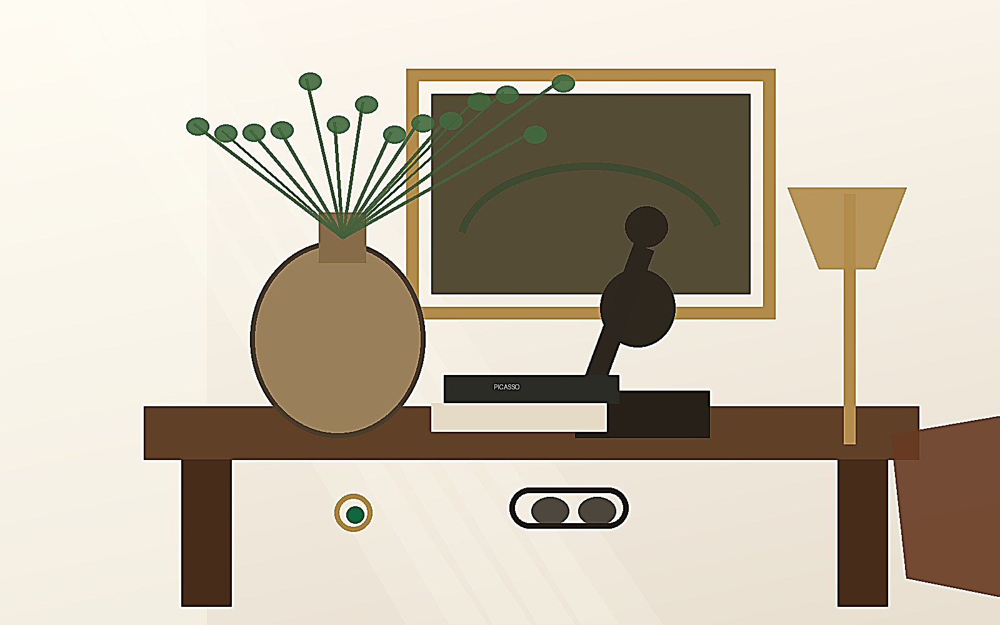
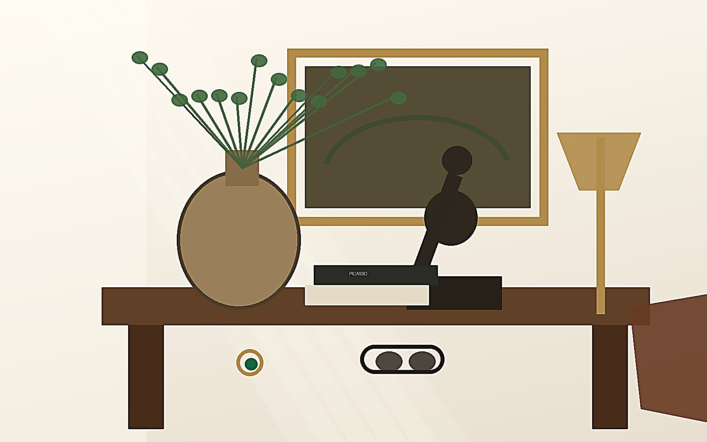
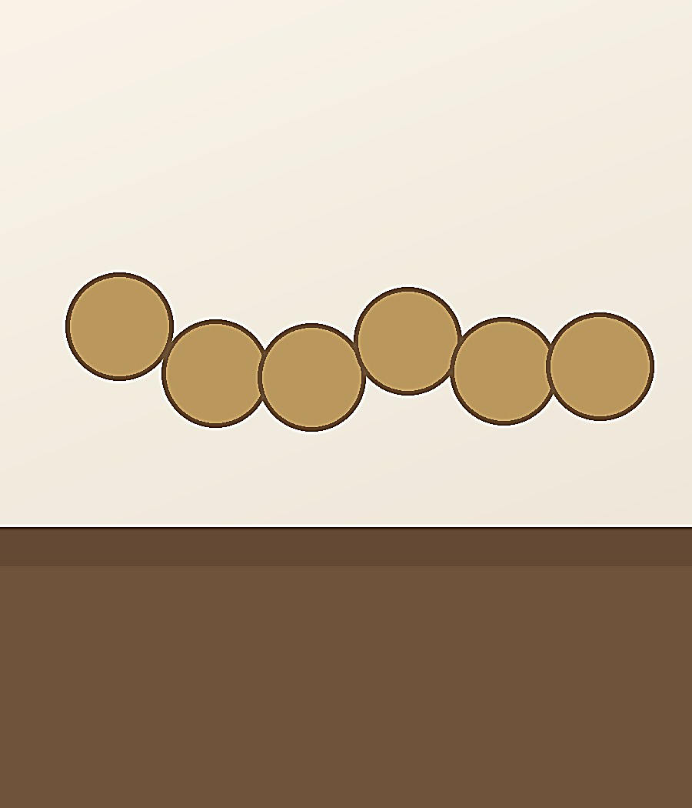
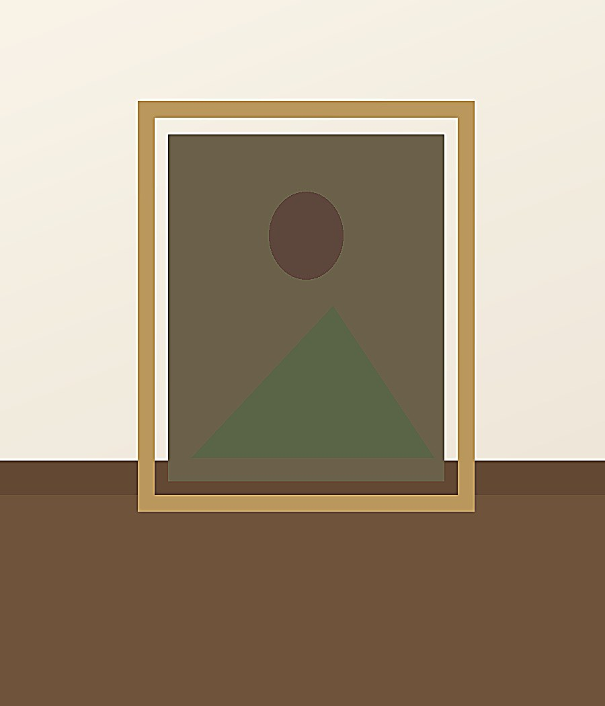
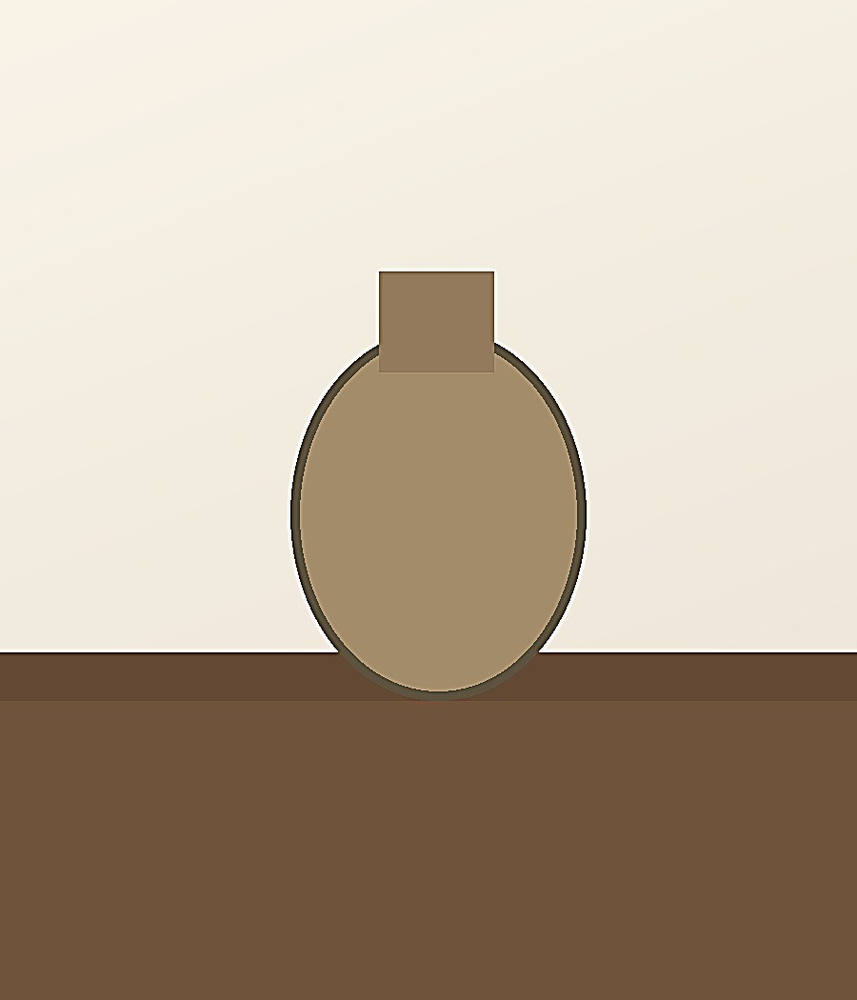
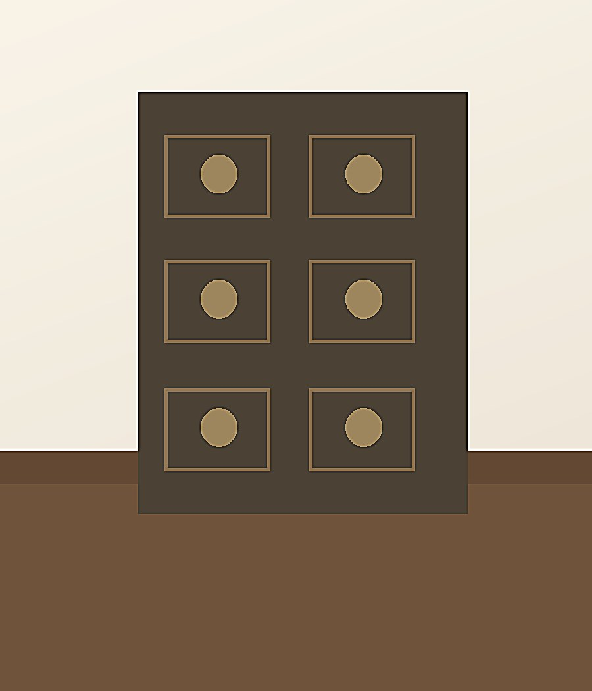

Art Deco Signet Ring
Jewelry · $425
Curated · Collectible · Rare
A modern cabinet of curiosities filled with furniture, art, vintage clothing, jewelry, eyewear, coins, and remarkable objects chosen for their craftsmanship, character, and the stories they carry.

A House of Found Things
Every piece is selected because it has something to offer: beauty, craftsmanship, character, or a story worth carrying forward.
Explore

Our Philosophy
I am building a business of things I cherish and want people to enjoy. The Found House is a place for pieces that are not merely old, but meaningful.
Read Our PhilosophyRecent
Jewelry · $425

Eyewear · $195

Coins · From $85

Art · $950
Found


A well-worn piece carries more than wear. It carries a history.
Read more →